Chuyên Đề Mở Rộng Kỹ Thuật 25 Bảng Đồ Họa Cao Cấp 2 Phim Tài Liệu Lịch Sử Chuỗi Động Lực & Khí Động Học
CƠ SINH HỌC QUẦN VỢT HIỆN ĐẠI & KỶ NGUYÊN VỢT GRAPHITEMODERN TENNIS BIOMECHANICS & THE GRAPHITE RACKET ERA
Cuốn sách cẩm nang chuyên sâu đồng hành cùng 228 Tennis Tips của Rod Laver: Khám phá trọn vẹn bước nhảy vọt công nghệ từ vợt gỗ truyền thống sang vật liệu Carbon Composite, hiện tượng Snapback của cước Co-Polyester, lực xoáy Magnus 3200+ RPM và hình học sân bãi chuẩn mực ITF.
25 Bảng phân tích đồ họa chuyên sâu 2 Tư liệu phim lịch sử (Dunlop & Prince) Vật lý tiếp xúc & Khí động học Đồng hành cùng: 228 Mẹo Tennis Rod Laver
Nhấn EN để đọc bản tiếng Anh · Press EN for the English text
TỔNG QUAN LỊCH SỬ
Cuộc Cách Mạng Vật Liệu: Từ Vợt Gỗ Maxply Đến Sợi Carbon Composite
Historical Evolution: Wood Era, Oversize Revolution & Carbon Tour Dynamics
Trong suốt gần một thế kỷ từ thập niên 1880 đến cuối thập niên 1970, quần vợt thi đấu gắn liền với những cây vợt gỗ uốn nhiều lớp (laminated wood). Bước ngoặt xảy ra vào năm 1976 khi kỹ sư hàng không Howard Head phát minh cây vợt nhôm quá khổ Prince Classic, và tiếp đó là sự thống trị tuyệt đối của sợi Carbon Composite với Prince Graphite và Dunlop Max 200G.
Thông số / Đặc tínhSpecification / Property
Kỷ Nguyên Vợt Gỗ (1930s-1970s)Wooden Racket Era (1930s-1970s)
Chuỗi động lực 7 mắt xích, búng roi quất >3200 RPM7-link kinetic chain, whip-like snap > 3,200 RPM
The Rise and Fall of DunlopThe Rise and Fall of Dunlop
Phim tài liệu chuyên sâu về đế chế Dunlop — thương hiệu làm chủ kỷ nguyên vợt gỗ với dòng vợt huyền thoại Dunlop Maxply Fort mà Rod Laver, Lew Hoad và John McEnroe từng sử dụng để thống trị Wimbledon và US Open.An in-depth documentary on the Dunlop empire - the brand that ruled the wooden-racket era with the legendary Dunlop Maxply Fort, the frame Rod Laver, Lew Hoad and John McEnroe once used to dominate Wimbledon and the US Open.
Cấu tạo thủ công tinh xảo: Ghép từ 9 lớp gỗ sồi (English ash), gỗ phong và gỗ dẻ gai ép dưới áp lực thủy lực cực lớn.Exquisite hand-built construction: 9 laminates of English ash, sycamore and burr elm pressed under enormous hydraulic pressure.
Hạn chế vật lý: Mặt vợt chỉ 65 sq.in, dễ bị cong vênh bởi độ ẩm nên luôn phải kẹp trong khung gỗ 4 ốc vít (presses).Physical limitation: only a 65 sq.in head that warped with humidity, so it always lived in a four-bolt wooden press.
Bước ngoặt chuyển dịch: Dòng vợt đúc khuôn Max 200G bằng nylon gia cường sợi carbon mở đường cho McEnroe và Steffi Graf.The pivot point: the Max 200G, injection-moulded in carbon-fibre-reinforced nylon, paved the way for McEnroe and Steffi Graf.
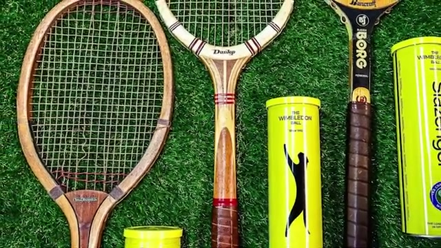
The Rise and Fall of PrinceThe Rise and Fall of Prince
Hành trình cách mạng hóa quần vợt của Howard Head — cựu kỹ sư hàng không đã ứng dụng định luật vật lý để mở rộng mặt vợt từ 65 lên 110 sq.inch, khai sinh dòng vợt Prince Classic và Prince Graphite (POG) lẫy lừng.Howard Head's journey to revolutionise tennis - a former aerospace engineer who applied the laws of physics to stretch the hitting surface from 65 to 110 sq.in, giving birth to the celebrated Prince Classic and Prince Graphite (POG).
Lời giải vật lý của Howard Head: Công thức momen quán tính (I = ∫ r² dm) chứng minh việc kéo rộng đường kính đầu vợt sẽ tăng gấp 4 lần khả năng chống xoay vặn khi chạm bóng lệch tâm.Howard Head's physics answer: the moment-of-inertia formula (I = integral r2 dm) proves that widening the head multiplies resistance to twisting on off-centre contact fourfold.
Cơn địa chấn Pam Shriver (1978): Tay vợt nữ 16 tuổi dùng Prince Classic 110 quật ngã các huyền thoại để lọt vào chung kết US Open.The Pam Shriver earthquake (1978): a 16-year-old girl with a Prince Classic 110 toppled the legends to reach the US Open final.
Huyền thoại Prince Graphite (POG): Bổ sung thanh giằng chữ thập (Crossbar) tạo nên biểu tượng chiến thắng của Michael Chang và Andre Agassi.The Prince Graphite (POG) legend: its added crossbar became the winning symbol of Michael Chang and Andre Agassi.
Khai mở các thông số kỹ thuật then chốt của kỷ nguyên hiện đại: 8 vát cạnh cán bát giác, trọng lượng vung Babolat RDC, mô hình chuỗi động lực 7 mắt xích và hiện tượng biến dạng đàn hồi Snapback 3 mili-giây trên mặt lưới cước Co-Polyester.
BẢNG I-APLATE I-ATối ưu hóa độ ổn định mặt vợt trên khung Graphite diện tích lớn (100 sq.in, chạc ba mở Aerodynamic)Optimising face stability on the large-headed graphite frame (100 sq.in, aerodynamic open throat)
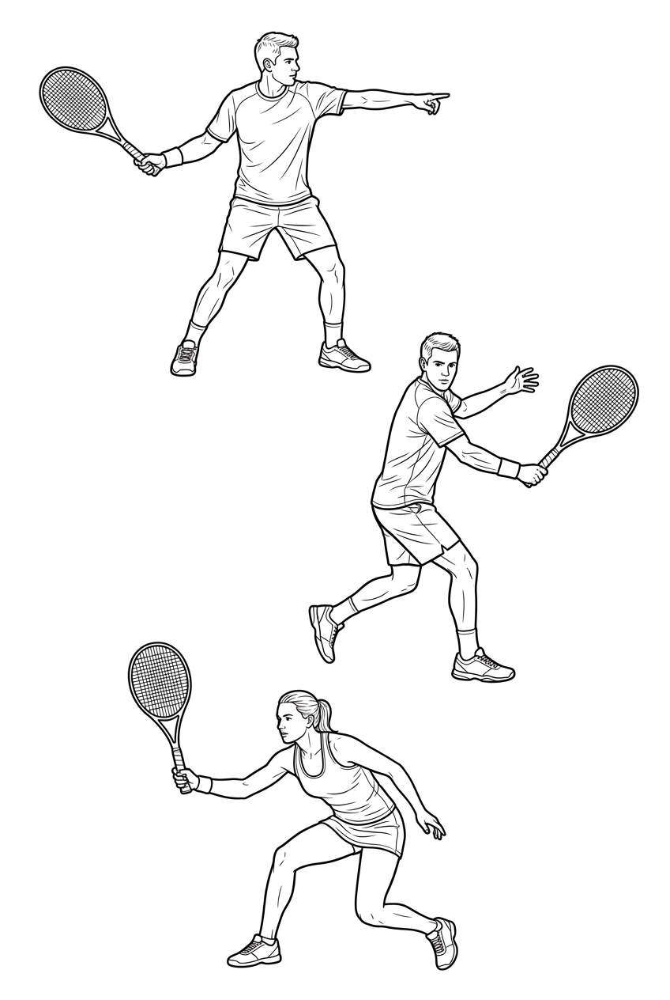
Phóng To Đồ Họa
Cầm Vợt Vững Chắc & Khóa Cổ Tay Với Vợt Graphite Hiện ĐạiHolding the Racket Firmly & Locking the Wrist on a Modern Graphite Frame
1. Khóa cứng cổ tay khi chạm bóng (Wrist Firmness at Impact): Mặt vợt Graphite diện tích lớn sẽ bị xoay vặn nếu tay cầm lỏng lẻo. Khóa cổ tay vững chắc giúp triệt tiêu xung lực và định hướng bóng chính xác.1. Wrist firmness at impact: a large-headed graphite frame twists on contact if the grip hand is loose. A firm wrist lock absorbs the shock and directs the ball accurately.
2. Trái tay một tay vươn dài (One-Handed Backhand Extension): Đưa vai dẫn đường vuông góc với lưới, vung vợt ra xa khỏi thân người và giải phóng toàn bộ cánh tay xuyên qua điểm tiếp xúc.2. One-handed backhand extension: set the leading shoulder square to the net, swing the racket away from the body and release the whole arm through the contact point.
3. Bắt Volley thấp hạ trọng tâm (Low Volley Knee Flexion): Khuỵu sâu hai đầu gối giữ lưng thẳng, mặt vợt mở nhẹ đưa bóng vọt qua mép lưới mà không cần vung vợt lấy đà.3. Low volley knee flexion: sink both knees with the back straight and, with the face slightly open, lift the ball over the net without any backswing.
Góc Nhìn Huấn Luyện Viên: Với vợt gỗ cổ điển, trọng lượng 380g buộc người chơi phải gồng chặt toàn bộ cánh tay. Với vợt graphite 300g, bạn thả lỏng tối đa khớp vai và bắp tay trong lúc vung đà, nhưng siết chặt ngón tay và khóa cổ tay đúng 0.005 giây tại khoảnh khắc bóng chạm mặt cước.
Coach's Corner: With a classic 380 g wooden racket, the player is forced to lock the entire arm rigid. With a 300 g graphite frame, you relax the shoulder and upper arm as much as possible through the swing, then squeeze the fingers and lock the wrist for exactly 0.005 seconds at the moment the ball meets the strings.
BẢNG I-BPLATE I-BSơ đồ giải phẫu 8 vát cạnh (Bevels 1-8) trên cán vợt bát giác và vị trí khớp gốc ngón trỏAnatomy of the 8 bevels on the octagonal handle and the position of the index-knuckle pad
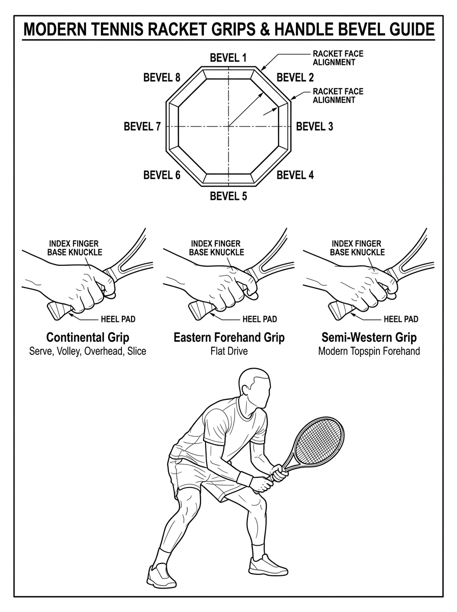
Phóng To Đồ Họa
Cẩm Nang 8 Cạnh Cán Vợt & Các Kiểu Cầm Vợt Hiện Đại (Bevel Guide)The 8-Bevel Handle Guide & Modern Grips
Cạnh #2 (Continental Grip): Khớp gốc ngón trỏ đặt trên cạnh 2. Cầm vợt đa năng tối thượng cho Giao bóng, Volley, Smash, Cắt Slice và Bỏ nhỏ.Bevel #2 (Continental Grip): the index knuckle sits on bevel 2. The ultimate all-purpose grip for serve, volley, smash, slice and drop shot.
Cạnh #3 (Eastern Forehand): Đặt lòng bàn tay phẳng sau cán vợt. Đánh bóng phẳng uy lực, tiếp xúc bóng ngang tầm hông.Bevel #3 (Eastern Forehand): the heel pad sits flat behind the handle. Powerful flat hitting with contact at hip height.
Cạnh #4 (Semi-Western Grip): Kiểu cầm vợt phổ biến nhất của quần vợt hiện đại, tạo độ xoáy Topspin cuộn bóng an toàn và cắn sâu vào sân đối phương.Bevel #4 (Semi-Western Grip): the most popular grip in modern tennis, generating topspin that loops the ball safely and bites deep into the opponent's court.
Góc Nhìn Huấn Luyện Viên: Cán vợt bát giác không phải hình tròn ngẫu nhiên: từng vát cạnh phẳng là chiếc la bàn xúc giác định hướng mặt vợt trong không gian mà không cần nhìn xuống tay. Hãy rèn luyện thói quen xoay cán vợt tự nhiên bằng tay không thuận trong khi chờ đón bóng.
Coach's Corner: The octagonal handle is not round by accident: each flat bevel is a tactile compass that orients the face in space without your ever looking down at your hand. Train the habit of adjusting the handle naturally with the non-dominant hand while you wait for the ball.
BẢNG I-CPLATE I-CLịch sử vật liệu 4 thế hệ: Gỗ ép Dunlop Maxply Fort -> Nhôm quá khổ Prince Classic -> Carbon Composite Prince POG -> Aero Tour Carbon 3200+ RPMFour generations of materials: laminated Dunlop Maxply Fort -> oversized aluminium Prince Classic -> carbon-composite Prince POG -> carbon Aero Tour, 3,200+ RPM
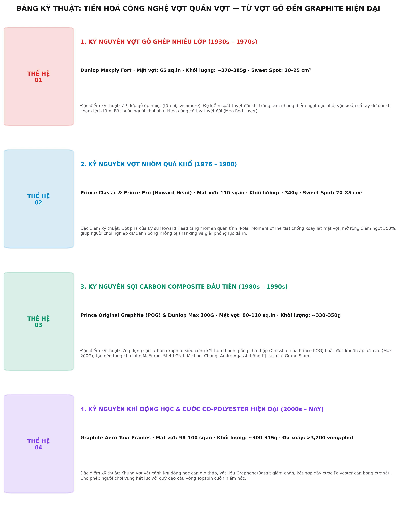
Phóng To Đồ Họa
Tiến Hoá Công Nghệ Vợt Quần Vợt — Từ Vợt Gỗ Đến Graphite Hiện ĐạiThe Evolution of Tennis Racket Technology - From Wood to Modern Graphite
1. Kỷ nguyên gỗ (1930s-1970s): Mặt vợt 65 sq.in, sweet spot tí hon (20-25 cm²). Buộc phải khóa chặt cổ tay tuyệt đối để chống xoắn vặn chấn thương.1. The wood era (1930s-1970s): a 65 sq.in head with a tiny sweet spot (20-25 cm2). Players had to lock the wrist absolutely to avoid injurious twisting.
2. Cách mạng vợt quá khổ (1976-1980): Howard Head phát minh Prince Classic 110 sq.in, mở rộng điểm ngọt 350%, tăng mô-men quán tính chống lật mặt vợt.2. The oversized revolution (1976-1980): Howard Head invented the 110 sq.in Prince Classic, enlarging the sweet spot by 350% and raising the polar moment that resists the face flipping over.
3. Sợi Carbon composite (1980s-1990s): Prince POG thanh giằng chữ thập & Dunlop Max 200G khai sinh lối đánh Baseline topspin của McEnroe, Graf, Agassi.3. Carbon-composite fibre (1980s-1990s): the crossbar Prince POG and Dunlop Max 200G spawned the baseline-topspin game of McEnroe, Graf and Agassi.
4. Khí động học & Cước Co-Poly (2000s-Nay): Khung vợt vát cánh cản gió thấp kết hợp cước Polyester tạo độ xoáy cuộn > 3,200 vòng/phút.4. Aerodynamics & co-polyester strings (2000s-present): low-drag beam shaping combined with polyester strings produces loop spin above 3,200 rpm.
Góc Nhìn Huấn Luyện Viên: Sự chuyển dịch vật liệu đã làm thay đổi hoàn toàn sinh cơ học quần vợt: từ cú đánh phẳng tịnh tiến của Rod Laver trên mặt sân cỏ sang những cú giật topspin cuộn bão táp từ cuối sân của Nadal và Alcaraz.
Coach's Corner: The shift in materials changed tennis biomechanics completely - from Rod Laver's flat, translational strokes on grass to the storm of looping topspin from the back of the court hit by Nadal and Alcaraz.
BẢNG I-DPLATE I-DMô hình tích lũy động lượng từ phản lực mặt đất đến cú búng cổ tay và so sánh vận tốc đầu vợt (Vmax: ~120 mph vs ~65 mph)The momentum-build model from ground reaction force to the wrist snap, with racket-head speed comparison (Vmax: ~120 mph vs ~65 mph)
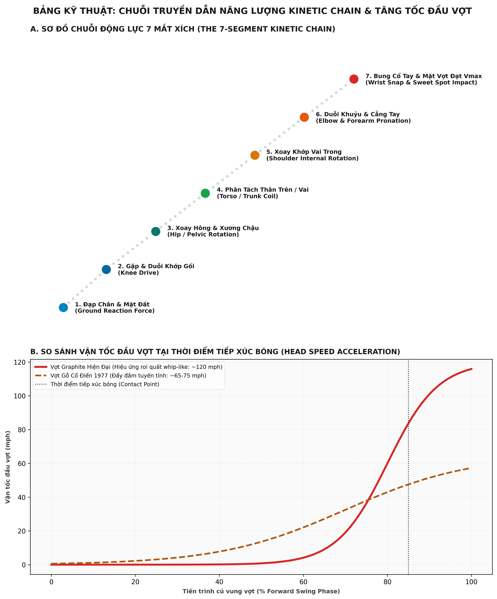
Phóng To Đồ Họa
Chuỗi Truyền Dẫn Năng Lượng Kinetic Chain 7 Mắt Xích & Gia Tốc Đầu VợtThe 7-Link Kinetic Chain & Racket-Head Acceleration
1. Chuỗi động lực 7 mắt xích: Mặt đất (GRF) -> Khớp gối -> Xương chậu/Hông -> Thân trên/Vai -> Khớp vai trong -> Cẳng tay/Khuỷu -> Bung cổ tay tại điểm chạm bóng.1. The 7-link chain: ground (GRF) -> knee -> pelvis/hip -> trunk/shoulder -> lead shoulder -> forearm/elbow -> wrist release at the contact point.
2. Hiệu ứng roi quất (Whip-like Acceleration): Vợt Graphite tích tụ năng lượng phi tuyến tính ở 15% pha vung cuối, đẩy vận tốc đầu vợt vọt lên 120 mph.2. The whip-like acceleration effect: a graphite racket stores energy non-linearly over the final 15% of the swing, launching racket-head speed to 120 mph.
3. So sánh với vợt gỗ cổ điển: Vợt gỗ nặng 380g chỉ tạo được lực đẩy tuyến tính cứng nhắc (65-75 mph), đòi hỏi dồn đà thân người thay vì búng roi quất.3. Compared with the classic wooden racket: a heavy 380 g frame generates only a rigid, linear push (65-75 mph) and demands whole-body weight transfer instead of a whip-like snap.
Góc Nhìn Huấn Luyện Viên: Nếu bạn chỉ dùng sức của cánh tay, bạn đang bỏ phí 80% công suất của cơ thể. 54% tổng động năng của cú đánh xuất phát từ hai chân và vùng hông hông-chậu-lưng. Hãy đạp đất và xoay trục trước khi giải phóng cánh tay.
Coach's Corner: If you hit with arm strength alone, you are wasting 80% of your body's output. 54% of a shot's total kinetic energy starts in the legs and the hip-pelvis-trunk complex. Push off the ground and rotate the axis before you release the arm.
BẢNG I-EPLATE I-ECác thông số cơ học tiêu chuẩn Tour: Trọng lượng tĩnh (Static Weight), Trọng lượng vung (Babolat RDC Swingweight), Điểm cân bằng và Độ cứng RAStandard Tour mechanical specs: static weight, swingweight (Babolat RDC), balance point and RA stiffness
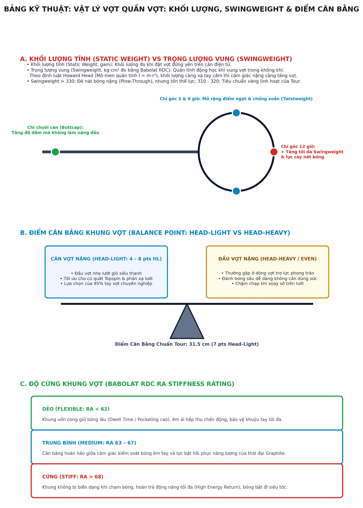
Phóng To Đồ Họa
Vật Lý Vợt Quần Vợt: Khối Lượng Tĩnh, Swingweight & Điểm Cân BằngTennis Racket Physics: Static Weight, Swingweight & Balance
1. Khối lượng tĩnh vs Swingweight: Định luật Howard Head (I = m·r²): Trọng lượng vung quyết định cảm giác nặng khi chém gió. Swingweight > 330 cày nát bóng nặng; 310-320 linh hoạt cơ động.1. Static weight vs swingweight - Howard Head's law (I = m*r2): swingweight dictates how heavy the racket feels through the air. Above 330 it flattens heavy balls; 310-320 stays agile and manoeuvrable.
2. Phân bố chì cân chỉnh (Lead Tape): Dán chì góc 12h tăng tối đa lực đập; góc 3 & 9h mở rộng điểm ngọt và chống xoắn (Twistweight); chuôi cán tăng độ đầm êm tay.2. Balancing lead tape: tape at 12 o'clock maximises plow-through; tape at 3 and 9 o'clock widens the sweet spot and raises twistweight; tape on the butt cap adds a damped, solid feel.
3. Điểm cân bằng & Độ cứng RA: Cân bằng đầu nhẹ 4-8 pts HL (31.5 cm) cho phép vung siêu tốc; Độ cứng RA < 62 dẻo êm giữ bóng, RA > 68 cứng trả lực cực mạnh.3. Balance & RA stiffness: a head-light balance of 4-8 pts HL (31.5 cm) allows super-fast swings; an RA of 68 is stiff and returns power explosively.
Góc Nhìn Huấn Luyện Viên: Đừng bao giờ chọn vợt chỉ dựa vào trọng lượng ghi trên nhãn. Một cây vợt 300g nhưng cân bằng nặng đầu (Head Heavy) sẽ cho cảm giác vung nặng hơn và dễ gây chấn thương cổ tay hơn một cây vợt 320g cân bằng đầu nhẹ (Head Light).
Coach's Corner: Never choose a racket on the weight printed on the label alone. A 300 g frame that is head-heavy will swing heavier and stress the wrist more than a 320 g head-light frame.
BẢNG I-FPLATE I-FĐộng lực học mặt lưới cước Co-Polyester hiện đại: Hiện tượng Snapback 3ms tạo xoáy >3200 RPM, so sánh mật độ 16x19 vs 18x20 và biểu đồ lực căng 40-65 lbsThe stringbed dynamics of modern co-polyester: the 3 ms snapback that creates > 3,200 rpm of spin, a 16x19 vs 18x20 pattern comparison and the 40-65 lb tension chart
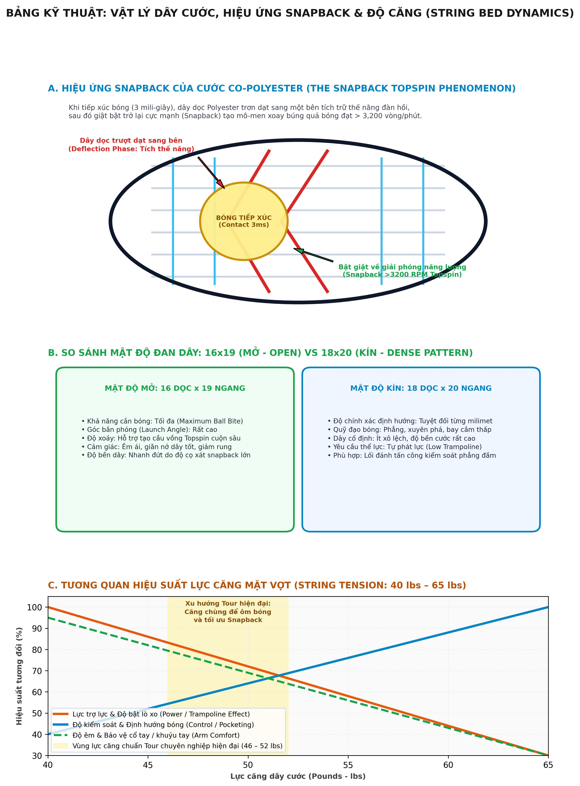
Phóng To Đồ Họa
Vật Lý Dây Cước, Hiệu Ứng Snapback & Lực Căng Mặt VợtString Physics, the Snapback Effect & Stringbed Tension
1. Hiện tượng Snapback 3 mili-giây: Dây dọc Polyester trơn trượt dạt sang một bên tích trữ thế năng, sau đó giật bật trở lại cực nhanh tạo ma sát cuộn bóng bão táp.1. The 3-millisecond snapback: slick polyester mains slide sideways, storing potential energy, then snap back almost instantly, creating the friction that spins the ball violently.
2. Mật độ đan dây 16x19 vs 18x20: Mật độ mở 16x19 cắn bóng sâu, góc bắn cao vút hỗ trợ Topspin; mật độ kín 18x20 kiểm soát đường bay phẳng chuẩn xác từng milimet.2. 16x19 vs 18x20 patterns: the open 16x19 bites the ball deep with a high launch angle that supports topspin; the dense 18x20 controls flat flight paths to the millimetre.
3. Xu hướng lực căng Tour hiện đại (46-52 lbs): Các tay vợt chuyên nghiệp hạ bớt độ căng để ôm bóng sâu hơn (pocketing) và kích hoạt lực bật snapback tối đa.3. The modern Tour tension trend (46-52 lbs): professionals string lower so the ball is pocketed deeper and the snapback effect is fully activated.
Góc Nhìn Huấn Luyện Viên: Cước cọ vào bóng không tạo ra xoáy bằng sự dịch chuyển đàn hồi ngang của các dây cước. Dây cước Co-Poly thế hệ mới có lớp phủ bôi trơn PTFE giúp dây trượt tự do và bắn ngược trở lại với xung lực xoay kinh ngạc.
Coach's Corner: Strings do not create spin simply by rubbing the ball; spin comes from the elastic sideways displacement of the strings. Newer co-polyester strings carry a slick PTFE coating that lets the strings slide freely and rebound with astonishing rotational force.
CHUYÊN ĐỀ 2
Cơ Sinh Học Cú Thuận Tay Hiện Đại & Khí Động Học Xoáy
Modern Forehand Biomechanics, Stances & Magnus Aerodynamics
Phân tích 3 bộ chân di chuyển hiện đại, cơ chế vung gập kính chắn gió (Windshield Wiper) và định luật Bernoulli - Magnus chi phối đường bay của trái bóng tennis tốc độ cao.
BẢNG II-APLATE II-AQuy trình 2 pha chuẩn mực: Xoay thân trên sớm (Unit Turn) và Tiếp xúc bóng phía trước hông với vợt Carbon AerodynamicThe textbook two-phase process: the early unit turn and making contact out in front of the hip with an aerodynamic carbon frame
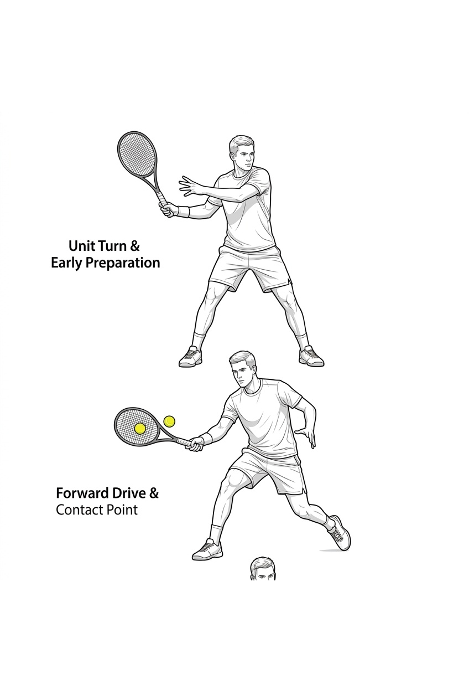
Phóng To Đồ Họa
Chuỗi Động Lực Cú Thuận Tay Hiện Đại (Modern Forehand Biomechanics)The Modern Forehand Kinetic Chain
1. Xoay thân trên sớm (Unit Turn): Xoay vai và hông 90 độ ngay khi bóng rời vợt đối phương, tay không thuận chỉ theo bóng để giữ thăng bằng và căn cự ly.1. The early unit turn: rotate the shoulders and hips 90 degrees the instant the ball leaves the opponent's racket, with the non-dominant hand pointing at the ball to hold balance and spacing.
2. Tiếp xúc bóng phía trước hông (Hit Out in Front): Trọng tâm dồn về chân trước, tăng tốc đầu vợt đánh xuyên qua tâm bóng ở vị trí đón bóng lý tưởng phía trước mũi chân.2. Hit out in front: shift the weight onto the front foot and accelerate the racket head through the ball's centre from the ideal contact position out in front of the toe.
3. Tận dụng độ ổn định xoắn của khung vợt Graphite: Cổ tay khóa vững giúp mặt vợt không rung lắc khi truyền toàn bộ động lượng cơ thể vào trái bóng.3. Exploiting the graphite frame's torsional stability: a locked, steady wrist keeps the face from vibrating so all of the body's momentum transfers into the ball.
Góc Nhìn Huấn Luyện Viên: Cú thuận tay hiện đại không vung theo đường thẳng tắp. Quỹ đạo vung là một đường cong hyperbol từ dưới lên, cuộn qua bóng và quấn quanh vai đối diện như một chiếc gạt nước ô tô tốc độ cao.
Coach's Corner: The modern forehand does not swing in a straight line. The swing path is a rising hyperbola that loops through the ball and wraps around the opposite shoulder like a high-speed windscreen wiper.
BẢNG II-BPLATE II-BSo sánh 3 bộ chân cốt lõi: Bộ chân mở hoàn toàn (Open Stance), Bán mở (Semi-Open) và Trung lập bước vào sân (Neutral/Closed)Comparing the three core stances: fully open, semi-open, and neutral/closed stepping into the court
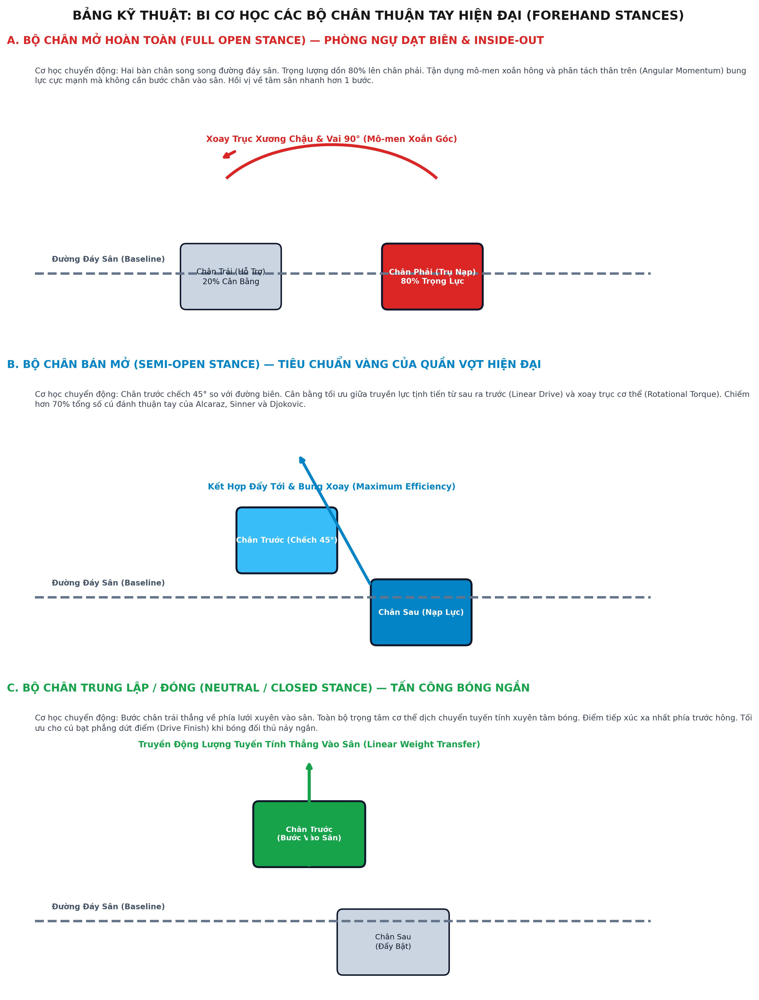
Phóng To Đồ Họa
Bi Cơ Học Các Bộ Chân Thuận Tay Hiện Đại (Modern Forehand Stances)The Biomechanics of Modern Forehand Stances
1. Bộ chân mở (Open Stance): Bàn chân song song baseline, dồn 80% trọng lượng lên chân phải nạp năng lượng xoay trục hông (Angular Momentum), hồi vị nhanh nhất khi bị dạt biên.1. Open stance: feet parallel to the baseline with 80% of the weight on the back foot loading hip angular momentum; the fastest recovery when you are pulled wide.
2. Bộ chân bán mở (Semi-Open): Bàn chân trước nghiêng 45°, vũ khí tiêu chuẩn vàng chiếm 70% các pha đôi công đỉnh cao nhờ kết hợp hoàn hảo giữa tịnh tiến và xoay thân.2. Semi-open stance: the front foot angled at 45 degrees, the golden default weapon in 70% of elite baseline exchanges thanks to its perfect blend of linear drive and trunk rotation.
3. Bộ chân trung lập (Neutral Stance): Bước chân trái thẳng vào trong sân dồn trọng lượng xuyên thẳng qua quả bóng, dứt điểm bóng ngắn với độ xuyên phá tối đa.3. Neutral stance: the front foot steps straight into the court so the weight drives directly through the ball, punishing short balls with maximum penetration.
Góc Nhìn Huấn Luyện Viên: Đừng bao giờ máy móc một bộ chân duy nhất. Khi bị ép chạy ra hai góc mang cá, bắt buộc phải dùng Open Stance để phanh và đạp ngược trở lại. Khi đối phương trả bóng ngắn giữa sân, hãy lập tức bước chân vào dùng Neutral Stance tấn công ghi điểm.
Coach's Corner: Never mechanically stick to a single stance. When forced out to the corners of the alleys you must use the open stance to brake and push back. When the opponent drops the ball short in the middle, step in immediately with the neutral stance and attack for the winner.
BẢNG II-CPLATE II-CQuy luật vật lý đường bay: Cú xoáy cuộn Topspin cắm sân, Cú bạt phẳng Flat Drive xuyên phá và Cú cắt Slice trượt sát mặt sânThe physics of ball flight: dipping topspin, the penetrating flat drive, and the slice that skids along the surface
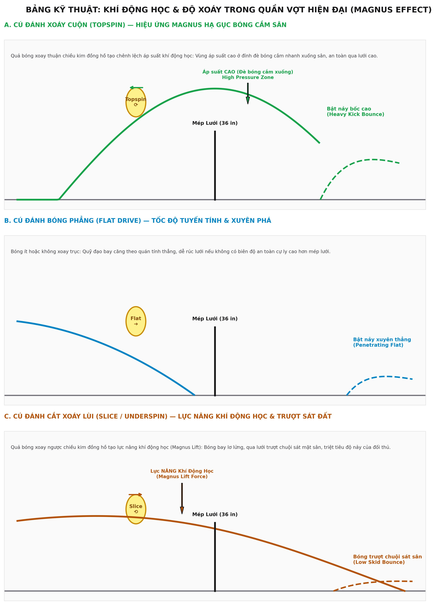
Phóng To Đồ Họa
Khí Động Học & Độ Xoáy Trong Quần Vợt Hiện Đại (Magnus Effect)Aerodynamics & Spin in Modern Tennis (the Magnus Effect)
1. Topspin & Áp suất cao: Quả bóng xoay thuận chiều kim đồng hồ tạo vùng áp suất khí động học cao ở đỉnh đè bóng cắm sập qua lưới, nảy bốc vọt cao qua vai đối thủ.1. Topspin & high pressure: a ball spinning clockwise creates a zone of high aerodynamic pressure on top that forces it down through the net, then it bounces explosively over the opponent's shoulder.
2. Flat Drive quán tính thẳng: Quả bóng không xoay trục bay theo quán tính thẳng căng, xuyên phá nhanh nhưng đòi hỏi kỹ năng căn cự ly lưới cực kỳ chuẩn xác.2. The flat drive: a ball with no axis spin travels in a straight inertial line - penetrating and fast, but it demands extremely precise net-clearance judgement.
3. Slice & Lực nâng Magnus: Xoay ngược chiều kim đồng hồ sinh lực nâng khí động học (Magnus Lift), bóng lướt là là mặt sân và trượt chuội triệt tiêu điểm bật cao.3. Slice & Magnus lift: reverse spin generates aerodynamic lift, so the ball floats just over the surface and skids forward, killing the high bounce.
Góc Nhìn Huấn Luyện Viên: Lực Magnus là 'thần hộ mệnh' của những cú đánh tốc độ cao. Một cú thuận tay 130 km/h nếu đánh phẳng sẽ bay ra ngoài sân 2 mét; nhưng nếu có 3000 vòng xoay topspin/phút, lực đè Magnus sẽ ép bóng cắm sập xuống cách vạch cuối sân 30 cm.
Coach's Corner: Magnus force is the guardian angel of fast shots. A 130 km/h forehand hit flat sails two metres long; with 3,000 rpm of topspin, Magnus pressure forces it to dip and land 30 cm inside the baseline.
So sánh sự khác biệt cơ sinh học giữa đòn bẩy đơn một tay (đòi hỏi xoay vai vuông góc và vươn dài ngực) và đòn bẩy kép hai tay (dẫn động bằng tay không thuận như một cú thuận tay tay trái).
BẢNG III-APLATE III-APhân tích kỹ thuật thực chiến trên nền tảng khung vợt thi đấu hiện đạiMatch-tested technique analysis built on the modern competition frame
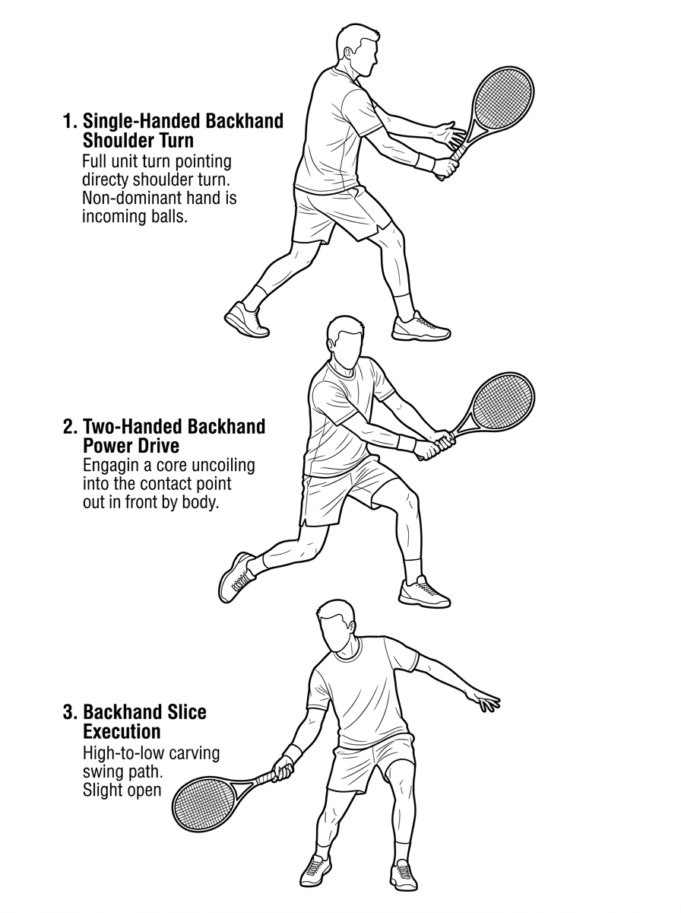
Phóng To Đồ Họa
Cơ Học Trái Tay 1 Tay, 2 Tay & Cú Cắt Bóng Hiện ĐạiThe Mechanics of the One- and Two-Handed Backhand and the Modern Slice
1. Trái tay một tay xoay vai vuông góc: Vai trước trỏ thẳng vào quả bóng bay tới, tay không thuận hỗ trợ giữ chạc vợt giúp mở vợt cao và ổn định.1. The one-hander with a square shoulder: the lead shoulder points straight at the oncoming ball while the non-dominant hand supports the throat, lifting the racket high and steady.
2. Trái tay hai tay tăng tốc hông: Hai bàn tay sát nhau trên cán vợt, khuỵu gối sâu và xoay mở hông mạnh mẽ để đánh bóng uy lực khi bóng nảy cao ngang ngực.2. The two-hander powered by the hips: both hands close together on the handle, knees deeply bent and the hips rotating open hard to drive the ball powerfully when it bounces up to chest height.
3. Cú cắt Slice từ cao xuống thấp: Khóa cứng cổ tay, miết cạnh dưới vợt trượt nhẹ qua đáy bóng để tạo quỹ đạo bay căng, bóng nảy trượt sát mặt sân không nảy cao.3. The high-to-low slice: lock the wrist firmly and brush the lower edge of the frame lightly across the bottom of the ball for a flat trajectory that skids low off the surface.
Góc Nhìn Huấn Luyện Viên: Cú cắt Slice không phải là cú đánh phòng thủ thụ động. Một cú Slice hiện đại được thực hiện với cổ tay khóa chặt và miết cước sắc như dao cạo sẽ tạo ra quỹ đạo bóng là là mặt cỏ hoặc mặt sân cứng, buộc đối phương phải cúi gập gối xúc bóng lên.
Coach's Corner: The slice is not a passive defensive shot. A modern slice struck with a locked wrist and razor-sharp brushing of the strings skids low along grass or hard court, forcing the opponent to bend the knees and scoop the ball up.
BẢNG III-BPLATE III-BPhân tích cơ học 3 giai đoạn: Xoay thân chuẩn bị, Cánh tay không thuận dẫn động và Vung kết thúc cao qua vaiA three-phase mechanical analysis: the preparation turn, the non-dominant-arm drive, and the high follow-through over the shoulder
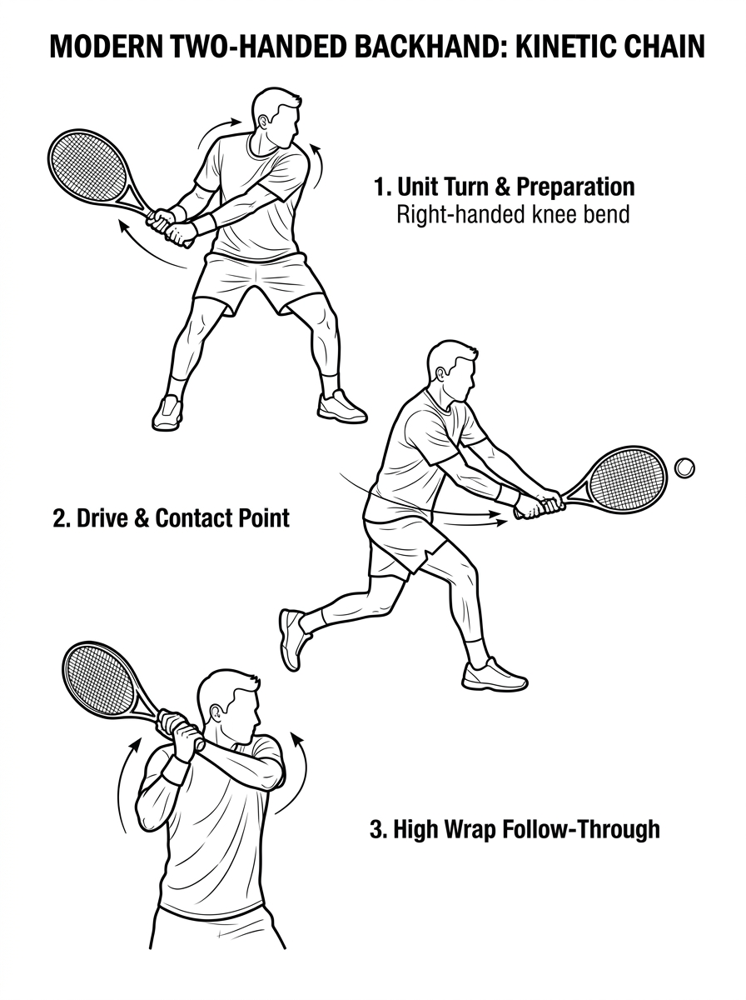
Phóng To Đồ Họa
Chuỗi Động Lực Trái Tay Hai Tay (Two-Handed Backhand Kinetic Chain)The Two-Handed Backhand Kinetic Chain
1. Xoay thân chuẩn bị (Unit Turn): Trùng sâu đầu gối, xoay vai 90 độ, hai tay nắm sát nhau trên cán vợt đưa đầu vợt lên cao sẵn sàng tích lũy thế năng.1. The unit turn: bend the knees deeply, turn the shoulders 90 degrees and, with both hands tight on the handle, lift the racket head high to store potential energy.
2. Dẫn động & Điểm tiếp xúc (Drive & Contact): Trọng lượng dồn mạnh lên chân trước, cánh tay trái (tay không thuận) vươn dài đóng vai trò như cú thuận tay tay trái đánh xuyên qua bóng phía trước đùi.2. Drive & contact: the weight loads hard onto the front foot while the left (non-dominant) arm extends fully, acting like a left-handed forehand that drives through the ball in front of the thigh.
3. Vung kết thúc cuộn cao (High Wrap): Toàn bộ thân trên mở xoay tự nhiên, hai khuỷu tay nâng cao, đầu vợt cuộn trọn vẹn qua vai phải giữ thăng bằng mắt nhìn cố định điểm chạm bóng.3. The high wrap: the whole trunk unwinds naturally, both elbows rise, and the racket head wraps completely over the right shoulder as the eyes stay fixed on the contact point.
Góc Nhìn Huấn Luyện Viên: Bí quyết vàng của cú trái hai tay: Tay không thuận (tay trên) làm 70% công việc phát lực. Nếu bạn thuận tay phải, cú trái hai tay thực chất là một cú thuận tay bằng tay trái có tay phải trợ lực giữ thăng bằng.
Coach's Corner: The golden secret of the two-handed backhand: the non-dominant (top) hand does 70% of the work. If you are right-handed, your two-handed backhand is really a left-handed forehand with the right hand along for balance.
Làm chủ cú đánh phát động trận đấu: từ góc gập đầu gối trong tư thế chiếc cúp (Trophy Pose), động tác úp cẳng tay Pronation 130+ mph đến phân loại mặt đồng hồ tung bóng (Toss Clock) cho Kick và Slice serve.
BẢNG IV-APLATE IV-ATối ưu hóa lực bộc phát từ mặt đất lên đỉnh đầu qua chuỗi động lực 3 giai đoạnOptimising the explosive force from the ground to the top of the reach through the three-phase chain
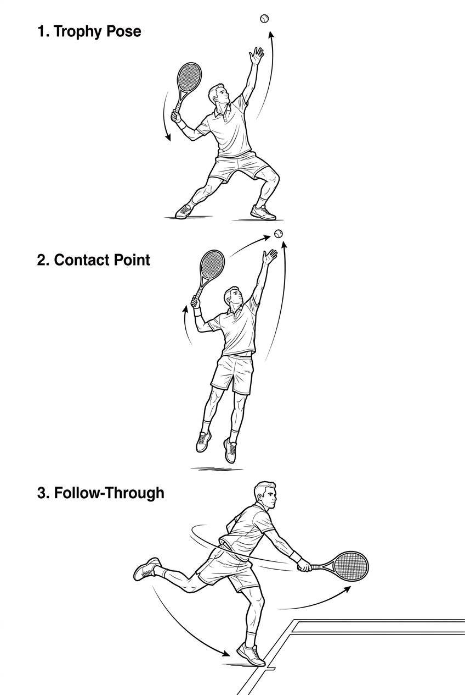
Phóng To Đồ Họa
Chuỗi Phát Lực Giao Bóng Hiện Đại & Úp Cẳng Tay PronationThe Modern Serve Power Chain & Forearm Pronation
1. Tư thế chiếc cúp (Trophy Pose): Gập sâu đầu gối tích lũy lực đàn hồi, tay tung bóng vươn thẳng đứng như trụ cột dẫn hướng, đầu vợt gập sâu sau lưng (back-scratch).1. The trophy pose: bend the knees deeply to store elastic energy, extend the tossing arm straight up as a guiding pillar, and drop the racket head deep behind the back (back-scratch).
2. Điểm chạm bóng đỉnh cao & Pronation: Bật nhảy vươn người hết tầm, úp xoay cẳng tay từ trong ra ngoài (pronation) tại điểm tiếp xúc để đạt vận tốc đầu vợt tối đa.2. High contact & pronation: jump and stretch to full reach, then rotate the forearm from inside to outside at contact to reach maximum racket-head speed.
3. Tiếp đất chủ động vào trong sân: Chân sau vung xuyên qua giữ thăng bằng, tiếp đất vững vàng bằng chân trước bên trong vạch baseline sẵn sàng cho pha bóng tiếp theo.3. Landing actively inside the court: the back leg swings through to hold balance, landing solidly on the front foot inside the baseline, ready for the next ball.
Góc Nhìn Huấn Luyện Viên: Pronation không phải là gập cổ tay! Pronation là sự xoay trục của toàn bộ cẳng tay từ xương quay quanh xương trụ. Cố tình gập cổ tay khi giao bóng tốc độ cao là nguyên nhân hàng đầu dẫn tới viêm gân cổ tay.
Coach's Corner: Pronation is not wrist flexion! Pronation is the axial rotation of the entire forearm - the radius turning around the ulna. Deliberately flexing the wrist on a high-speed serve is the leading cause of wrist tendinitis.
BẢNG IV-BPLATE IV-BSo sánh quỹ đạo vung đầu vợt và góc cắn bóng giữa cú Giao bóng cống (Kick) và Giao bóng xoáy ngang (Slice)Comparing racket-path and ball-bite angles between the kick serve and the slice serve
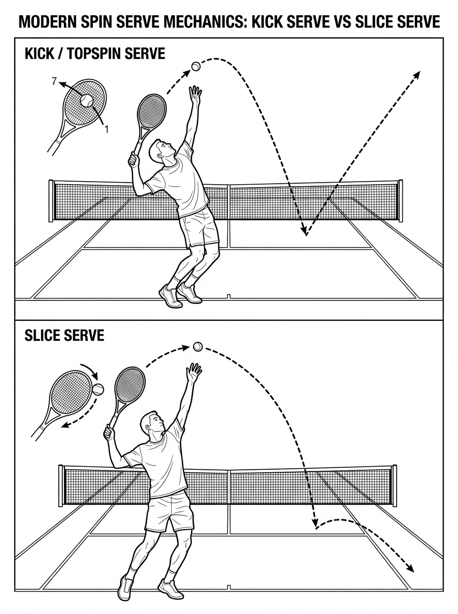
Phóng To Đồ Họa
Cơ Học Giao Bóng Xoáy Hiện Đại: Kick Serve Đối Đầu Slice ServeThe Mechanics of Modern Spin Serves: Kick vs Slice
Giao bóng Kick Serve (Topspin-Kick): Tung bóng trên đỉnh đầu hơi chếch sau lưng, uốn cong lưng và quét đầu vợt cuộn từ 7h lên 1h. Bóng vọt qua mép lưới cao rồi cắm sập và nảy bốc lên tầm vai đối thủ.Kick serve (topspin-kick): toss the ball slightly behind the top of the head, arch the back and brush the racket head from 7 o'clock up to 1 o'clock. The ball clears the net high, then dives and jumps up to the opponent's shoulder.
Giao bóng Slice Serve: Tung bóng chếch sang phải (với người thuận tay phải), miết mặt vợt chém quanh cạnh ngoài từ 3h sang 9h. Bóng lượn cong trên không và trượt ngang kéo đối thủ ra ngoài mép sân.Slice serve: toss the ball out to the right (for right-handers) and carve around the outside of the ball from 3 o'clock to 9 o'clock. The ball curves through the air and slides wide, dragging the opponent off the court.
Góc Nhìn Huấn Luyện Viên: Cú Kick serve là vũ khí phòng thủ an toàn nhất cho quả giao bóng 2. Bạn có thể vung vợt với 100% tốc độ mà bóng vẫn cắm vào ô giao bóng nhờ quỹ đạo bay cầu vồng cao hơn mép lưới từ 1 mét trở lên.
Coach's Corner: The kick serve is the safest defensive weapon for a second serve. You can swing at 100% pace and the ball still lands in the box because its rainbow arc passes a metre or more above the net.
BẢNG IV-CPLATE IV-CĐịnh vị 3 góc tung bóng quanh đỉnh đầu và giải phẫu tư thế cúp (Trophy Pose Knee Flexion & Hip Arch)Mapping the three toss positions around the top of the head, plus trophy-pose anatomy (knee flexion & hip arch)
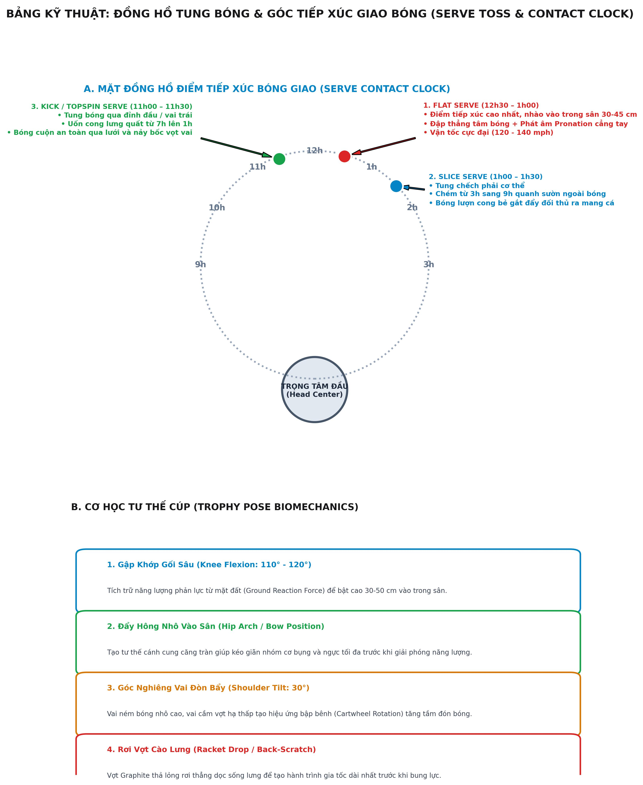
Phóng To Đồ Họa
Đồng Hồ Tung Bóng & Góc Tiếp Xúc Giao Bóng (Serve Toss & Contact Clock)The Serve Toss & Contact Clock
1. Flat Serve (12h30 - 1h00): Tung bóng chếch phải và nhào vào sân 30-45 cm, tiếp xúc trên đỉnh tầm với tối đa, gập cẳng tay pronation đạt vận tốc 120-140 mph.1. Flat serve (12:30 - 1:00): toss out to the right and lean into the court 30-45 cm, making contact at the very top of the reach with full pronation, reaching 120-140 mph.
2. Slice Serve (1h00 - 1h30): Tung bóng chếch phải, chém quanh sườn bóng từ 3h sang 9h để bóng lượn cong bẻ gắt đẩy đối phương ra góc mang cá.2. Slice serve (1:00 - 1:30): toss out to the right and carve around the side of the ball from 3 to 9 o'clock so it bends sharply and pushes the opponent out to the alley.
3. Kick Serve (11h00 - 11h30): Tung bóng qua đỉnh đầu/vai trái, thân uốn cánh cung căng tràn quất từ 7h lên 1h giúp bóng nảy bốc vượt tầm vai đối thủ.3. Kick serve (11:00 - 11:30): toss over the top of the head and the left shoulder, arch the body like a drawn bow and whip from 7 to 1 o'clock so the ball jumps above the opponent's shoulder.
Góc Nhìn Huấn Luyện Viên: Tung bóng ổn định là linh hồn của cú giao bóng. Hãy giữ cánh tay tung bóng thẳng như đòn bẩy, nhả bóng ở ngang tầm mắt bằng các đầu ngón tay thay vì hất cổ tay.
Coach's Corner: A consistent toss is the soul of the serve. Keep the tossing arm straight like a lever and release the ball at eye level with the fingertips rather than flicking the wrist.
BẢNG IV-DPLATE IV-DKỹ thuật phản xạ đối phó cú giao bóng sấm sét trên nền tảng khung vợt Graphite trợ lựcReflex technique for countering a booming serve, built on the power-assisting graphite frame
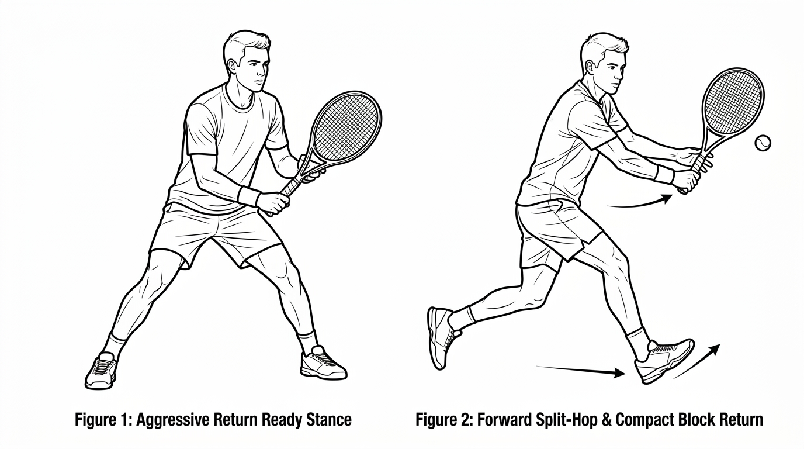
Phóng To Đồ Họa
Tư Thế Trả Giao Bóng Tấn Công & Bước Nhảy Split-Step Tiến Vào SânThe Attacking Return Stance & the Split-Step Forward
Tư thế đón bóng chủ động: Đứng bên trong vạch baseline, hai chân rộng bằng vai nhún trên ức bàn chân, thân trên đổ nhẹ về trước, giữ vợt hướng thẳng về phía máy chủ giao bóng.The proactive ready position: stand inside the baseline, feet shoulder-width apart and bouncing on the balls of the feet, upper body leaning slightly forward, racket pointed straight at the server.
Bước bật nhảy Split-Step tiến tới: Bật nhảy nhịp nhàng ngay khi đối phương chạm bóng, dùng bước rút ngắn đà vung (compact block) đấm trả bóng sâu vào trung lộ hoặc chân đối thủ.The forward split-step: hop in rhythm the instant the opponent strikes, then use a compact block step to punch the return deep down the middle or at the opponent's feet.
Góc Nhìn Huấn Luyện Viên: Khi đối phương giao bóng 190 km/h, bạn chỉ có khoảng 0.45 giây để phản ứng. Tuyệt đối không mở vợt dài ra sau. Hãy xoay vai và dùng trọng lượng cơ thể bước vào đè bóng (chặn bóng - block return).
Coach's Corner: Against a 190 km/h serve you have roughly 0.45 seconds to react. Never take the racket back long. Turn the shoulders and use your body weight stepping in to block the ball back.
CHUYÊN ĐỀ 5
Kỹ Thuật Bắt Lưới (Volley) & Chuyển Tiếp Giữa Sân
Modern Net Play, Compact Punch, Swing Volley & Feather Touch
Tối ưu hóa khả năng phản xạ cự ly gần: triệt tiêu chuyển động vung sau thừa thãi, đè bóng bằng chuyển dịch trọng tâm và hai vũ khí hiện đại: Cú vô-lê vung đập (Drive Volley) và cú bỏ nhỏ hãm lực (Touch Drop).
BẢNG V-APLATE V-AKỹ thuật phản xạ cự ly gần với mặt vợt Carbon có độ ổn định xoắn cao (Torsional Stability)Close-quarters reflex technique on a carbon face with high torsional stability
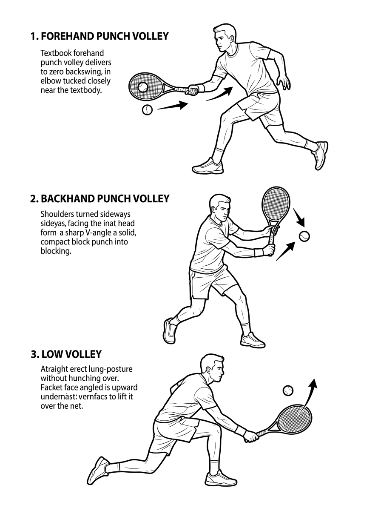
Phóng To Đồ Họa
Nghệ Thuật Đè Bóng & Bắt Lưới Volley Không Vung SauThe Art of Punching the Volley Without a Backswing
1. Bắt thuận tay xỉa đấm dứt khoát: Triệt tiêu hoàn toàn động tác vung sau, ép khuỷu tay gọn gàng trước ngực, bước chân trước tới và xỉa thẳng qua đường bay bóng.1. The decisive forehand punch volley: eliminate the backswing entirely, keep the elbow tucked neatly in front of the chest, step the front foot forward and punch straight through the ball's flight.
2. Bắt trái tay giữ đầu vợt cao: Khóa cứng cổ tay, giữ mặt vợt luôn cao hơn cổ tay để tạo điểm tựa đè bóng nặng và sắc bén xuống sân đối phương.2. The backhand volley with the racket head high: lock the wrist firmly and keep the face above the wrist to create a heavy, sharp punching platform into the opponent's court.
3. Bắt bóng thấp khuỵu gối: Hạ thấp trọng tâm bằng hai chân thay vì cúi gập lưng, mở nhẹ góc mặt vợt để nâng bóng vượt qua mép lưới an toàn.3. The low volley with knee flexion: lower the centre of gravity with the legs rather than bending the back, and open the face slightly to lift the ball safely over the net.
Góc Nhìn Huấn Luyện Viên: Quy tắc vàng bất biến của Rod Laver: 'Bắt volley bằng chân chứ không phải bằng tay'. Đặt mặt vợt vào vị trí chặn rồi bước chân dồn toàn bộ trọng lượng cơ thể xuyên qua quả bóng.
Coach's Corner: Rod Laver's unchanging golden rule: 'Volley with your feet, not your hands.' Put the face in the blocking position, then step and drive your whole body weight through the ball.
BẢNG V-BPLATE V-BLàm chủ hai vũ khí chuyển tiếp hiện đại: Dứt điểm trên không từ khu vực giữa sân và hãm lực xoáy lùi sát lướiMastering the two modern transition weapons: the aerial put-away from mid-court and the backspin kill right at the net
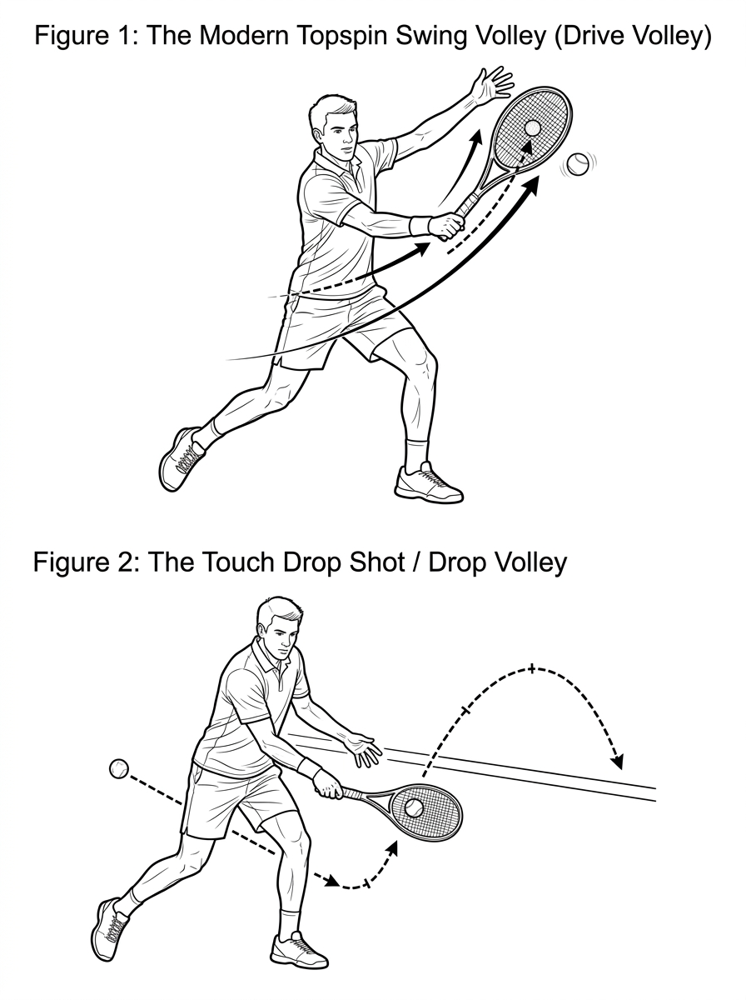
Phóng To Đồ Họa
Cú Vô-Lê Vung Đập (Swing Volley) & Cú Cắt Thả Nhỏ Tinh Tế (Touch Drop Shot)The Swing Volley & the Touch Drop Shot
1. Vô-lê vung đập Topspin (Drive Volley): Đón bóng bổng lơ lửng ngang ngực ở khu vực No-Man's Land, vung trọn cú Topspin forehand dứt điểm trực tiếp trên không trước khi bóng chạm đất.1. The topspin drive volley: take a floating ball at chest height in no-man's land and swing a full topspin forehand to put it away in the air before it bounces.
2. Cú thả nhỏ ngụy trang (Touch Drop Shot): Động tác vào bộ giống hệt cú đánh bóng sâu, thả lỏng cổ tay và các ngón tay ở khoảnh khắc chạm bóng để triệt tiêu lực đẩy của quả bóng.2. The disguised drop shot: the preparation looks identical to a deep drive, then the wrist and fingers go soft at the moment of contact to absorb all the ball's pace.
3. Xoáy ngược hãm bóng sát lưới: Mở nhẹ góc mặt vợt trượt dưới đáy bóng tạo độ xoáy lùi (backspin), khiến bóng rơi sát mép lưới và trượt chết không nảy cao.3. Backspin to kill the ball at the net: open the face slightly and slide it under the bottom of the ball to create backspin so it dies just past the net without bouncing high.
Góc Nhìn Huấn Luyện Viên: Cú Swing Volley là phát minh của thời đại vợt Graphite trợ lực cao. Nó cho phép bạn trừng phạt những quả bóng lốp non hoặc bóng bay lơ lửng giữa sân mà không cần chờ bóng chạm đất nảy lên làm chậm nhịp độ tấn công.
Coach's Corner: The swing volley is an invention of the high-powered graphite era. It lets you punish short lobs or balls floating in mid-court without waiting for the bounce to slow your attack.
Chiếm lĩnh không gian trên không: bộ chân lùi chéo nghiêng người, kỹ thuật bật nhảy đá kéo (Scissors Kick) dứt điểm ở tầm cao tối đa và nghệ thuật hóa giải bằng cú lốp xoáy cuộn Topspin Lob.
BẢNG VIPLATE VILàm chủ không gian trên không và kỹ thuật chuyển trạng thái từ phòng thủ sang phản côngOwning the air above the net and switching from defence to counter-attack
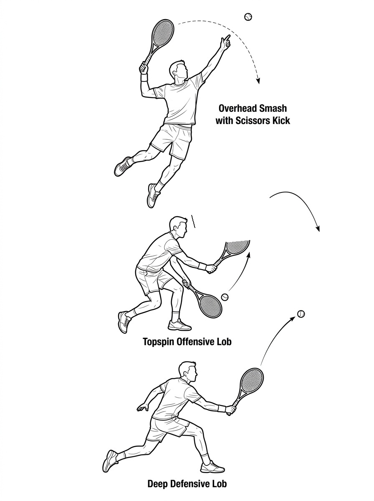
Phóng To Đồ Họa
Đập Bóng Trên Đầu (Overhead Smash) & Lốp Bóng Chiến ThuậtThe Overhead Smash & Tactical Lob
1. Smash bật nhảy đá kéo (Scissors-Kick): Xoay nghiêng người lùi bằng bước chéo, giơ tay không thuận chỉ định vị bóng, bật nhảy hoán đổi vị trí hai chân và đập bóng ở đỉnh cao.1. The scissors-kick smash: turn sideways and back with crossover steps, raise the non-dominant hand to point at the ball, then jump and swap the legs to strike at the highest point.
2. Lốp bóng Topspin tấn công: Hạ thấp đầu gối, hạ vợt dưới tầm bóng rồi miết cuộn từ dưới lên trên qua lưng bóng tạo đường bóng cầu vồng rơi nhanh qua tầm với đối thủ.2. The attacking topspin lob: sink the knees, drop the racket below the ball and brush from low to high over the back of the ball for a rainbow arc that drops quickly out of the opponent's reach.
3. Lốp bóng phòng thủ vươn cao: Khi bị ép sâu góc sân, mở ngửa mặt vợt với cổ tay vững chãi đưa bóng vút cao lên trời để câu giờ phục hồi vị trí trung tâm.3. The defensive high lob: when pinned deep in the corner, open the face wide with a steady wrist and launch the ball high into the sky to buy time and recover to the centre.
Góc Nhìn Huấn Luyện Viên: Khi đối phương lốp bóng bổng, sai lầm phổ biến nhất là chạy lùi bằng cách đi giật lùi (backpedaling). Điều này làm bạn mất thăng bằng ngửa ra sau. Hãy xoay nghiêng vai 90 độ ngay lập tức và di chuyển lùi bằng bước trượt chéo (side-shuffles).
Coach's Corner: When the opponent lobs, the most common mistake is retreating by backpedalling. That throws your balance backwards. Turn the shoulders 90 degrees immediately and move back with side-shuffles instead.
Bí quyết thể lực của các tay vợt đỉnh cao: kỹ thuật phanh dừng hấp thụ gia tốc (Deceleration), bước bắt chéo chân hồi vị (Crossover Step) và nhịp điệu bật tách chân Split-Step đón đầu nhịp đánh.
BẢNG VII-APLATE VII-ANền tảng thể lực và khả năng chuyển đổi trọng tâm linh hoạt trên mọi mặt sânThe athletic base and the ability to shift the centre of gravity fluidly on every surface
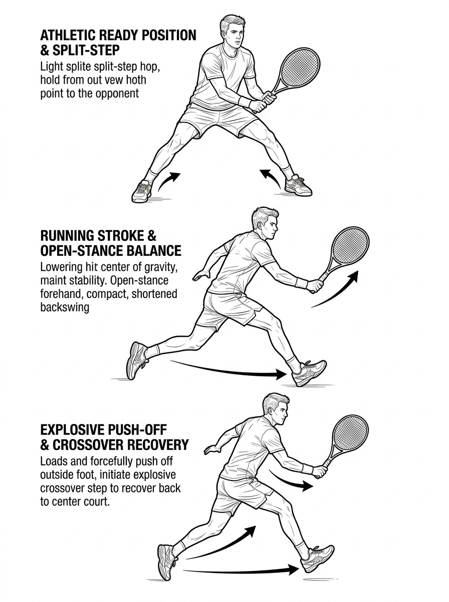
Phóng To Đồ Họa
Bộ Chân Di Chuyển Hiện Đại & Bước Bật Tách Chân (Split-Step)Modern Footwork & the Split-Step
1. Tư thế sẵn sàng & Split-Step chuẩn nhịp: Đứng trên các ức bàn chân, đầu gối chùng, bật nhẹ tách hai chân đúng khoảnh khắc đối thủ tiếp xúc bóng để nạp lực bộc phát.1. The ready position & rhythmic split-step: stand on the balls of the feet with knees flexed, then hop lightly and split the feet at the exact moment the opponent makes contact to load explosive power.
2. Giữ hạ thấp đầu khi chạy đánh bóng: Khi di chuyển ngang trên đà chạy tốc độ cao, giữ cằm và mắt ngang tầm quỹ đạo bay của bóng để giữ mặt phẳng vung vợt hoàn toàn ổn định.2. Keep the head low while running to the ball: when moving laterally at speed, hold the chin and eyes level with the ball's flight path so the swing plane stays perfectly stable.
3. Đạp chân ngoài & Bước bắt chéo (Crossover): Dậm mạnh mép trong bàn chân ngoài để phanh dừng và đạp ngược, dùng bước bắt chéo chân để trở lại trung tâm sân nhanh nhất.3. Push off the outside foot & the crossover step: drive hard off the inside edge of the outside foot to brake and push back, then use crossover steps to return to the centre of the court fastest.
Góc Nhìn Huấn Luyện Viên: Thời điểm thực hiện Split-Step là chìa khóa: không phải sau khi bóng bay qua lưới, mà là đúng 0.1 giây trước khi đối thủ chạm bóng. Khi bạn tiếp đất trên các ức bàn chân, hệ thần kinh cơ đã được 'lên dây cót' sẵn sàng xuất phát.
Coach's Corner: The timing of the split-step is the key: not after the ball crosses the net, but 0.1 seconds before the opponent strikes. When you land on the balls of your feet, the neuromuscular system is already primed to fire in any direction.
BẢNG VII-BPLATE VII-BKỹ thuật di chuyển hiện đại: Hấp thụ quán tính bằng chân ngoài, bước chéo chân bộc phát và nhịp bật tách chân đón đầuModern movement technique: absorbing inertia on the outside leg, explosive crossover steps, and a pre-emptive split-step rhythm
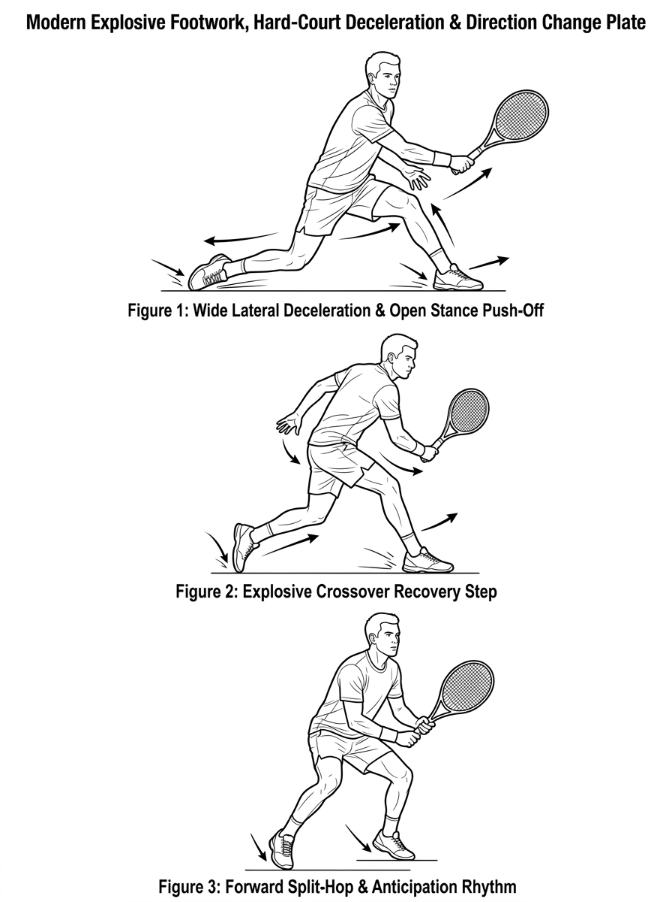
Phóng To Đồ Họa
Bộ Chân Giảm Tốc Cường Độ Cao, Phanh Trượt & Đảo Chiều NhanhHigh-Intensity Deceleration, Braking & Quick Reversals
1. Phanh dừng mở rộng & Giảm tốc (Deceleration & Push-Off): Chùng sâu đầu gối chân ngoài biên để ghìm quán tính chạy nước rút, giữ đầu và thân trên thăng bằng tuyệt đối khi đánh bóng.1. Wide deceleration & push-off: sink the knee of the outside foot deep to arrest sprint inertia, keeping the head and upper body perfectly balanced as you strike.
2. Bước bắt chéo chân bộc phát (Explosive Crossover): Đạp mạnh mép trong bàn chân ngoài, vắt chân qua thân để sải bước dài quay trở lại trung tâm sân nhanh nhất.2. The explosive crossover: drive hard off the inside edge of the outside foot and throw the other leg across the body to cover ground back to the centre of the court.
3. Nhịp bật tách chân đón đầu (Split-Hop Rhythm): Căn đúng khoảnh khắc đối phương chạm bóng để bật nhẹ trên các ức bàn chân, tích trữ thế năng đàn hồi sẵn sàng xuất phát theo mọi hướng.3. The pre-emptive split-hop rhythm: time the light hop on the balls of the feet to the opponent's contact, storing elastic energy ready to launch in any direction.
Góc Nhìn Huấn Luyện Viên: Kỹ thuật trượt sân cứng (Hard-Court Sliding) của Djokovic và Alcaraz đòi hỏi cơ tứ đầu đùi cực khỏe và giày tennis có rãnh viền hỗ trợ. Điểm quan trọng nhất là giữ trọng tâm ở giữa hai chân, không để ngửa thân người ra ngoài.
Coach's Corner: The hard-court sliding technique of Djokovic and Alcaraz demands extremely strong quadriceps and tennis shoes with supportive edge channels. The most important point is keeping the centre of gravity between the feet and never leaning the body outside it.
CHUYÊN ĐỀ 8
Hình Học Sân Bãi ITF, Chiến Thuật Tỷ Lệ & Bài Tập Thực Chiến
ITF Court Geometry, Wardlaw Percentage Play, Modern Doubles & Drills
Quy luật toán học và xác suất quyết định chiến thắng: Kích thước chính thức ITF, độ võng tâm lưới, 3 quy tắc định hướng của Wardlaw, chiến thuật Serve + 1 và giáo án bổ trợ cơ xoay khớp vai (Rotator Cuff).
BẢNG VIII-APLATE VIII-ANghệ thuật phối hợp đội hình, khai thác điểm yếu đối thủ và giữ vững tâm lý thépThe art of coordinating formation, exploiting the opponent's weakness and holding an iron mentality
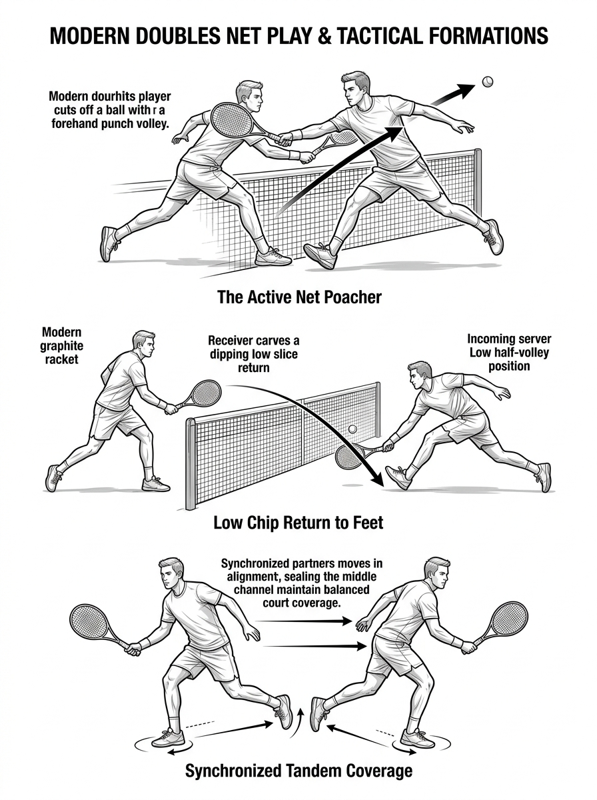
Phóng To Đồ Họa
Chiến Thuật Đánh Đôi Hiện Đại & Bắt Bài Trên Lưới (Poaching)Modern Doubles Tactics & Poaching
1. Người đứng lưới tích cực bắt bài (Poaching): Đọc hướng vợt của đối thủ từ sớm, bùng nổ di chuyển chéo góc cắt ngang mặt lưới để kết liễu điểm số bằng cú vô-lê dứt điểm.1. Active poaching at the net: read the opponent's racket path early, explode on a diagonal cut across the net and finish the point with a put-away volley.
2. Trả giao bóng chìm vào chân đối thủ: Dùng cú cắt hoặc gập bóng ngắn chuội ngay dưới tầm đầu gối của đối thủ đang lao lên lưới, buộc họ phải ngửa vợt đỡ bóng yếu ớt.2. Sinking the return at the opponent's feet: use a slice or a short dipped ball just below knee height as they charge the net, forcing a weak, scooping reply.
3. Đồng đội di chuyển như sợi dây đàn: Luôn duy trì cự ly song hành hợp lý giữa hai người chơi, bịt kín khoảng trống trung lộ và bảo vệ góc biên vững chắc.3. Teammates moving like a spring: always keep a sensible parallel distance between the two players, sealing the middle gap and protecting the alley corners solidly.
Góc Nhìn Huấn Luyện Viên: Trong đánh đôi, người chơi lưới xuất sắc không đứng im chờ bóng bay vào mình. Họ di chuyển giả (fake poach) để làm rối loạn mắt người đánh bóng cuối sân, ép đối phương tự mắc lỗi đánh hỏng.
Coach's Corner: In doubles, great net players do not stand still waiting for the ball to come to them. They use fake poaches to disturb the eye of the player at the back, forcing the opponent into an unforced error.
BẢNG VIII-BPLATE VIII-BQuy luật đánh bóng xác suất cao: Phân vùng chiến thuật sân đấu, khoảng sáng trên lưới và vùng phát lực tối ưu (Strike Zone)The laws of percentage tennis: tactical court zones, the clearance window over the net, and the optimal strike zone
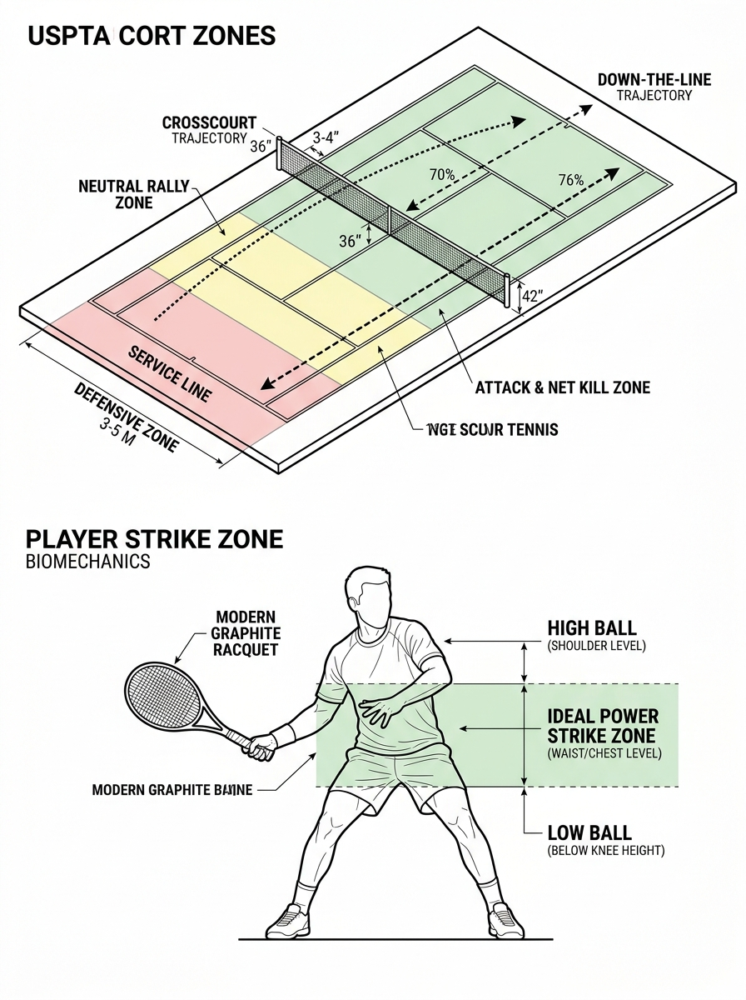
Phóng To Đồ Họa
Hình Học Sân Đấu, Vùng Tấn Công & Biên Độ An Toàn (Court Geometry & Percentage Tennis)Court Geometry, Attacking Zones & the Safety Margin
1. Ba vùng chiến thuật trên sân: Vùng Đỏ (Phòng thủ sâu 3-5m sau vạch đáy) - Vùng Vàng (Trung tính giằng co) - Vùng Xanh (Tấn công kết liễu trong vạch giao bóng).1. Three tactical zones on court: the Red Zone (deep defence, 3-5 m behind the baseline) - the Yellow Zone (neutral jockeying) - the Green Zone (attacking finish inside the service line).
2. Lợi thế đánh chéo sân (Crosscourt): Đường chéo dài hơn đường thẳng 1.5 mét, lưới ở giữa thấp hơn hai bên cột 6 inch (36 inch vs 42 inch), cho phép biên độ an toàn vượt trội gấp 3 lần.2. The crosscourt advantage: the diagonal is 1.5 m longer than the straight line, and the net is 6 inches lower in the middle than at the posts (36 in vs 42 in), giving three times the safety margin.
3. Strike Zone lý tưởng: Luôn điều chỉnh bộ chân để đón bóng trong tầm thắt lưng đến ngang ngực (Vùng phát lực bộc phát tối ưu nhất của vợt Graphite).3. The ideal strike zone: always adjust the feet so contact comes between waist and chest height - the zone where a graphite frame generates its most explosive power.
Góc Nhìn Huấn Luyện Viên: Quần vợt là trò chơi của người ít mắc lỗi hơn. 70% các điểm số trong tennis phong trào và 60% ở Tour kết thúc bằng lỗi tự đánh hỏng. Đánh chéo sân qua tâm lưới võng thấp là con đường ngắn nhất để nâng bậc trình độ.
Coach's Corner: Tennis is a game of who makes the fewest errors. 70% of points in recreational tennis and 60% on Tour end in unforced errors. Hitting crosscourt over the low, sagging middle of the net is the shortest path to raising your level.
BẢNG VIII-CPLATE VIII-CBản vẽ thiết kế kỹ thuật chính thức theo tiêu chuẩn Liên đoàn Quần vợt Quốc tế (ITF): Kích thước sân đơn, sân đôi, hành lang và chiều cao lướiThe official technical drawing to International Tennis Federation (ITF) standards: singles and doubles court dimensions, alleys and net height
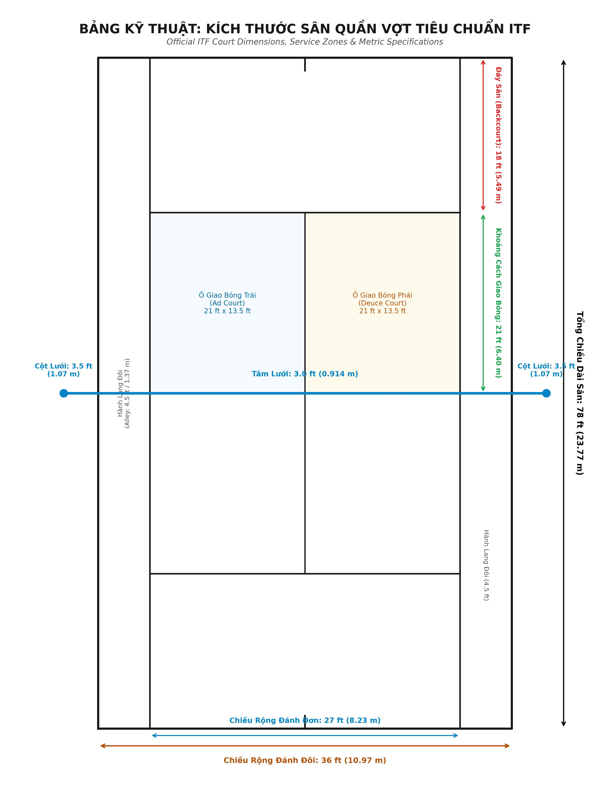
Phóng To Đồ Họa
Kích Thước Sân Quần Vợt Tiêu Chuẩn ITF & Vùng Giao Bóng (Metric Geometry)Standard ITF Court Dimensions & the Service Boxes
1. Kích thước tổng thể: Chiều dài sân 78 ft (23.77 m); Chiều rộng sân đơn 27 ft (8.23 m); Chiều rộng sân đôi 36 ft (10.97 m).1. Overall dimensions: 78 ft (23.77 m) long; 27 ft (8.23 m) wide for singles; 36 ft (10.97 m) wide for doubles.
2. Ô giao bóng (Service Box): Chiều dài 21 ft (6.40 m) x Chiều rộng 13.5 ft (4.115 m) chia thành Ad Court bên trái và Deuce Court bên phải.2. The service box: 21 ft (6.40 m) long by 13.5 ft (4.115 m) wide, divided into the Ad Court on the left and the Deuce Court on the right.
3. Độ võng của lưới (Net Sag): Mép cột lưới cao 3.5 ft (1.07 m), tâm giữa lưới võng xuống đúng 3.0 ft (0.914 m) - chìa khóa vàng lý giải tại sao đánh chéo sân luôn an toàn hơn.3. Net sag: 3.5 ft (1.07 m) at the posts, sagging to exactly 3.0 ft (0.914 m) in the middle - the golden key explaining why crosscourt is always safer.
Góc Nhìn Huấn Luyện Viên: Hiểu rõ kích thước sân giúp bạn ước lượng góc đánh chuẩn xác. Khi đối phương dạt ra ngoài mép sân đôi, góc mở sân trống rộng hơn 4 mét — bạn không cần phải đánh bóng sát mép dây mạo hiểm mà chỉ cần đưa bóng vào giữa ô trống là đủ ghi điểm.
Coach's Corner: Knowing the court dimensions precisely lets you judge angles accurately. When the opponent is pulled outside the doubles alley, the open court is more than 4 m wide - you don't need to thread the ball near the line; simply aiming into the middle of the empty court is enough to win the point.
BẢNG VIII-DPLATE VIII-DĐịnh luật đường bay chéo sân vs dọc dây, 3 quy tắc định hướng Wardlaw và chiến thuật Serve + 1 Forehand của thời đại hiện đạiThe geometry of crosscourt vs down-the-line, Wardlaw's three directional rules, and the modern Serve + 1 forehand tactic
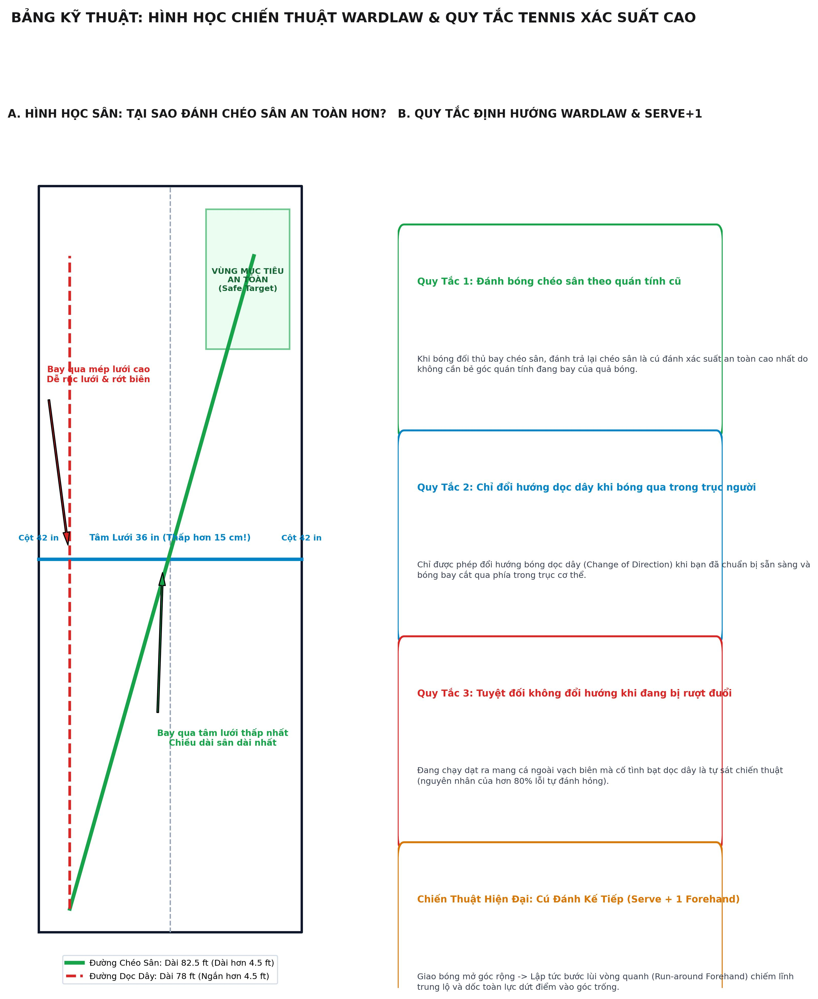
Phóng To Đồ Họa
Hình Học Chiến Thuật Wardlaw & Quy Tắc Tennis Xác Suất CaoWardlaw's Tactical Geometry & the Rules of Percentage Tennis
1. Lợi thế hình học đường chéo: Đường chéo dài 82.5 ft (dài hơn dọc dây 4.5 ft) và bay qua tâm lưới thấp nhất, giảm thiểu tối đa nguy cơ rúc lưới và ra biên.1. The geometric advantage of the diagonal: 82.5 ft long (4.5 ft longer than down the line) and over the lowest point of the net, minimising the risk of hitting into the net or long.
2. Ba quy tắc định hướng Wardlaw: Đánh chéo sân theo quán tính cũ là an toàn nhất; chỉ đổi hướng dọc dây khi bóng qua trong trục người; không bao giờ đổi hướng khi đang bị rượt đuổi.2. Wardlaw's three directional rules: hitting crosscourt with the existing momentum is always safest; only change down the line when the ball comes through the body's axis; never change direction while being run down.
3. Chiến thuật Serve + 1: Giao bóng kéo đối thủ dạt góc, lùi vòng quanh trung lộ dùng cú thuận tay dốc toàn lực dứt điểm vào khoảng trống.3. The Serve + 1 tactic: serve to drag the opponent wide, then arc around the backhand side of the middle and unload the forehand into the open court.
Góc Nhìn Huấn Luyện Viên: Quy tắc định hướng Wardlaw: Khi bóng đang bay chéo sân vào bạn, vung vợt trả lại theo đường chéo cũ là đi theo dòng quán tính tự nhiên. Cố tình bẻ hướng dọc dây đòi hỏi bạn phải đón bóng sớm hơn và chịu rủi ro rúc mép lưới cao.
Coach's Corner: Wardlaw's directional rule: when the ball is coming crosscourt at you, returning it back down the same diagonal is simply following the natural line of momentum. Deliberately bending it down the line requires you to take the ball earlier and accept the risk of catching the high net tape.
BẢNG VIII-EPLATE VIII-EBài tập nón số 8 (Figure-8 Agility), Khởi động chóp xoay vai (Rotator Cuff Prehab) và Bài tập dây căng trên lưới tạo biên độ an toànFigure-8 agility cones, rotator-cuff prehab, and the target-rope drill that builds a safety margin
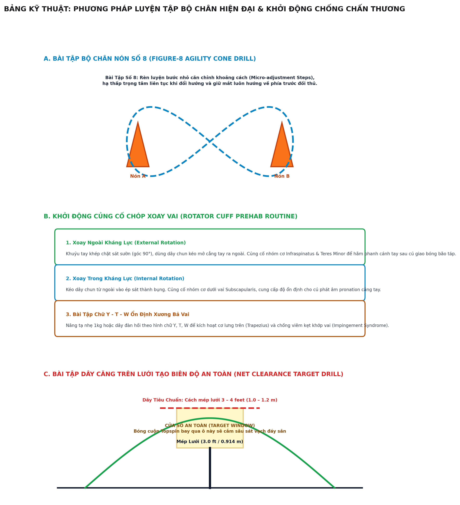
Phóng To Đồ Họa
Phương Pháp Luyện Tập Bộ Chân Hiện Đại & Khởi Động Chống Chấn ThươngModern Footwork Drills & Injury-Prevention Warm-Up
1. Bài tập nón số 8 (Figure-8 Drill): Rèn luyện bước nhỏ căn chỉnh khoảng cách (micro-adjustments) và hạ thấp trọng tâm liên tục khi đổi hướng quanh nón.1. The figure-8 cone drill: trains the small adjustment steps and the continuous lowering of the centre of gravity as you change direction around the cones.
2. Khởi động chóp xoay vai Rotator Cuff Prehab: Xoay ngoài và xoay trong với dây kháng lực củng cố cơ Infraspinatus và Subscapularis, phòng chống viêm kẹt khớp vai khi giao bóng tốc độ cao.2. Rotator-cuff prehab: external and internal rotation with a resistance band to strengthen the infraspinatus and subscapularis, preventing shoulder impingement during high-speed serving.
3. Bài tập dây căng trên lưới (Target Rope Drill): Căng dây cao hơn lưới 1 mét; đánh 100 quả Topspin bắt buộc bay qua khoảng trống này để rèn độ sâu bóng sát vạch đáy sân.3. The target-rope drill: string a rope a metre above the net and hit 100 topspin balls that must pass through that gap, training depth that lands near the baseline.
Góc Nhìn Huấn Luyện Viên: Đừng bao giờ bước vào sân và cầm vợt giao bóng hết lực ngay lập tức. Khớp vai là khớp có biên độ chuyển động lớn nhất nhưng kém ổn định nhất trên cơ thể. Hãy dành 5 phút khởi động xoay dây thun kháng lực để bảo vệ chóp xoay vai suốt đời chơi bóng.
Coach's Corner: Never walk onto the court and start serving at full power immediately. The shoulder is the joint with the greatest range of motion but the least stability in the body. Spend five minutes on resistance-band rotation to protect the rotator cuff for a lifetime of tennis.
Nền Tảng Bất Biến: 228 Mẹo Tennis Của Rod LaverThe Unchanging Foundation: Rod Laver's 228 Tennis Tips
Khoa học và công nghệ vợt có thể tiến hóa không ngừng, nhưng những nguyên lý căn bản của Rod Laver về tâm lý, bộ chân và cảm giác bóng vẫn là nền móng của mọi nhà vô địch. Hãy ôn luyện trọn vẹn 228 mẹo kinh điển kèm minh họa gốc.Racket science and technology may evolve endlessly, but Rod Laver's fundamental principles of mentality, footwork and ball feel remain the foundation of every champion. Review the full 228 classic tips with the original illustrations.